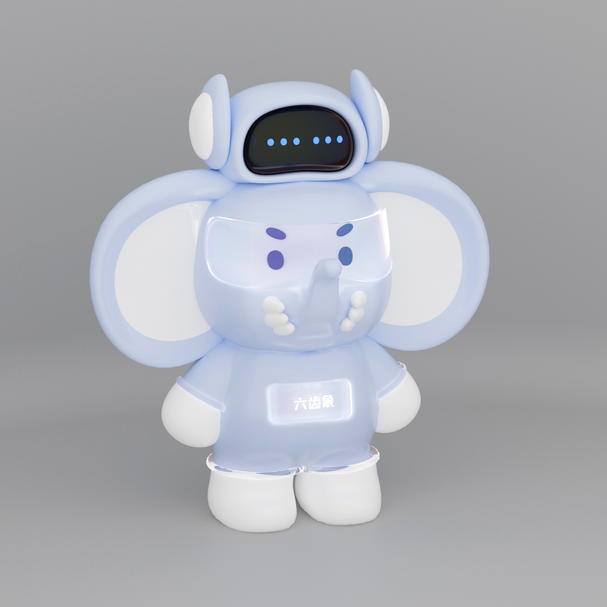

01 · 3D
3D Motion
沙粒 Logo 动态实验
形态演变 · 材质光影 · 品牌动态
你好，我是徐邦杰。专注三维动画、电商视觉与 AIGC 内容设计，以完整的创作流程，把产品卖点转化为有质感、有传播力的画面。
三维、动效与 AIGC 的交叉实验。手机端进入视口后会自动静音播放，点击可查看完整预览。
形态演变 · 材质光影 · 品牌动态
节奏设计 · 信息表达
镜头节奏 · 视觉叙事

04 · IP形象延展 · 场景搭建
每一叠文件夹代表一组完整的产品视觉项目。点击卡片展开，即可查看该项目的系列详情图。
五年三维建模渲染与三年三维动画经验，让我能够从产品卖点出发，独立完成画面构思、建模、材质、灯光、动画和后期的完整流程。
Bangjie Xu五年三维建模渲染经验，三年三维动画经验。
产品图、详情页、活动主视觉与内容运营协作经验。
熟练使用 AI 视频、AI 绘图工具，独立完成脚本、镜头与成片。
求职意向：动画设计 · 电商设计 · AIGC 设计师
期望薪资：8–12K ｜ 期望城市：成都
峨眉山市渴望热望艺术创作中心
四川仕多德网络科技有限公司
成都先胜信息科技有限公司
成都东软学院